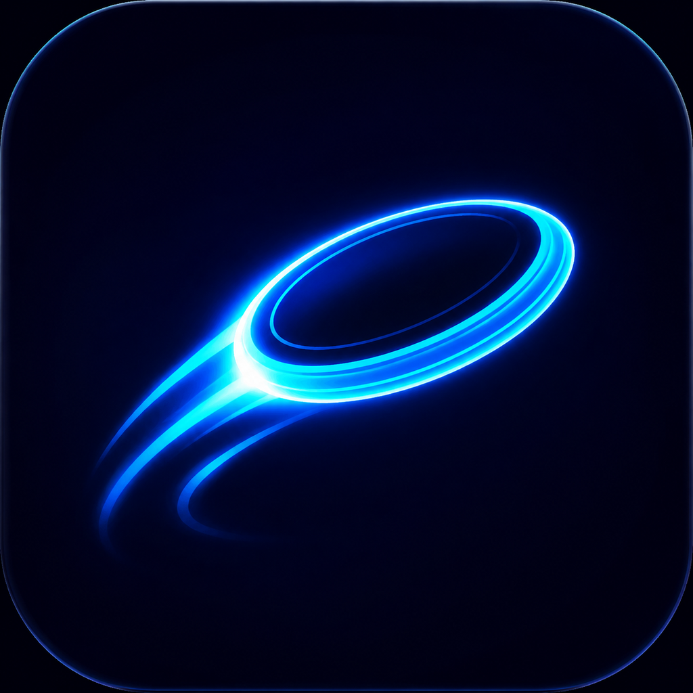

Disc golf analyzer app for iPhone
Analyze your disc’s flight.Analyze your flight.
Dial in your throw.
See your throw’s speed, disc angle, and early-flight path from slow-motion video. Measure your distance and keep your results together, from today’s practice to your personal bests.
- 5 free video analyses
- 5 free distance measurements
- Video stays on your iPhone
- Analyze throws in a field or into a net
- No extra hardware


Distance tracking
Track how far your throws go.
Tap Start where you throw, walk to your disc, then tap Finish. ThrowLab saves the straight-line distance with your practice history.
See your farthest recorded throw with each disc.
Compare average and farthest distances across your bag.
Compare each distance with your previous average for that disc.
Measure to where the disc stopped, including skips and rolls. Keep the app open and the back camera uncovered while you walk. No photos or video are saved during distance tracking.

Flight trends
Track your progress. Build consistency.
Choose a disc, throwing style, and intended line to see your recent results together. Follow the last 5, 10, 15, or 20 throws, or tap a point for a closer look.
Follow your speed in mph or km/h.
Compare visible disc tilt from throw to throw.
See whether the disc travels upward, level, or downward just after release.

Progress and practice sessions
Pick up where your last practice left off.
Your throws are grouped into sessions automatically. Open a session to review the results, or use the filters to find a particular disc, date, or type of throw.
Review speed, disc angle, and early-flight path for each throw.
Find the distances you measured during each session.
- A gap of 30 minutes or more starts a new session
Milestones
Your best throws, all in one place.
Find your farthest throws and fastest recorded speeds without searching through your sessions.
Your longest recorded distance with each disc.
Your highest saved speed for each disc, throwing style, and intended line.


Your discs
Keep your bag and throw history together.
Add your discs and their flight numbers once. Each saved throw stays connected to the disc you used, so you can find its results later.
See your saved discs with speed, glide, turn, and fade at a glance.
Compare estimated flight paths for up to four discs.
Compare discs
Compare turn and fade before you throw.
Start with a disc from your bag and add up to three others to the same flight chart. Adjust arm power or throwing style to compare their estimated turn and fade.
Flight paths are based on manufacturer flight ratings.

How it works
From a throw video to saved results.
Choose your disc and throw settings, then import a slow-motion clip.

- 01
Set the throw
Choose your disc, throwing style, and intended line.
- 02
Record in slow motion
Use a landscape clip showing the disc leaving your hand and continuing into early flight.
- 03
Find the disc
Choose a clear frame with the disc out of your hand, center it in the finder, and tap Analyze.
- 04
Review and repeat
Check your readings and how they compare with earlier throws. Record another when you’re ready.
Recording setup
Give the camera a clear view.
Use 240 fps slow motion, good light, and a side view of the release and early flight.
Keep the camera in the same position when recording throws you want to compare.
Frequently asked questions
What does ThrowLab analyze?
ThrowLab estimates speed, disc angle, and early-flight path from slow-motion video. You can also measure throw distance by marking where you threw and where the disc stopped.
What do negative disc angles mean?
Disc angle estimates visible rim tilt in the video. Camera placement affects the reading. In Trends, angles below −8° are labeled Down and angles above +8° are labeled Up. Readings from −8° through +8° are labeled Flat. This describes visible tilt in the video; camera placement affects the reading.
How does distance tracking work?
Tap Start where you throw, keep the app open and the back camera uncovered as you walk to your disc, then tap Finish. The result is the straight-line distance to where the disc stopped, including skips and rolls. Elevation and wind estimates appear when available.
What does the range in Flight Analysis mean?
The range shows your lowest and highest saved readings for the same disc, throwing style, and intended line, including this throw. The cyan dot marks the current reading. The difference from average compares it with your earlier throws.
How can I compare my throws?
In Trends, choose a disc, throwing style, and intended line to see the last 5, 10, 15, or 20 matching throws. Use the same camera placement when recording throws you want to compare.
How are practice sessions created?
ThrowLab groups flight analyses and distance measurements into sessions automatically. A gap of 30 minutes or more starts a new session. You can filter the list by type, disc, date, intended line, or throwing style.
What can I see in Milestones?
Your farthest recorded distance with each disc, plus your highest saved speed for each disc, throwing style, and intended line.
Does Compare use my throw videos?
No. Compare uses manufacturer flight ratings to estimate paths for up to four discs on one chart. You can adjust arm power and throwing style.
Does it support forehand and left-handed throws?
Yes. Choose forehand or backhand, right- or left-handed, and a Straight, Up, or Down intended line.
Can I use it with a practice net?
Yes, for flight analysis. Keep the disc visible for several frames after release, before it reaches the net. You do not need to capture the landing.
Are my videos uploaded?
No. Throw videos are processed on your iPhone and are not uploaded for analysis. No account is required.
How much does ThrowLab Pro cost?
Start with 5 free video analyses and 5 free saved distance measurements, counted separately. ThrowLab Pro unlocks unlimited use of both for $4.99 per month or $39.99 per year.
Practice guides
Filming tips and help with your results.
These short guides cover camera setup, the three flight readings, and your saved history.
How to record a disc golf throw for analysis
Learn where to place the camera, what to keep in the clip, and how to find the disc.
Read guide →How to read your ThrowLab analysis
Understand speed, disc angle, early-flight path, and flight trends in ThrowLab.
Read guide →How to track your disc golf practice progress
Compare the same disc and throwing style across practice sessions.
Read guide →
Available for iPhone
Try it at your next practice.
Start with 5 free video analyses and 5 free distance measurements. Continue with ThrowLab Pro for $4.99/month or $39.99/year.